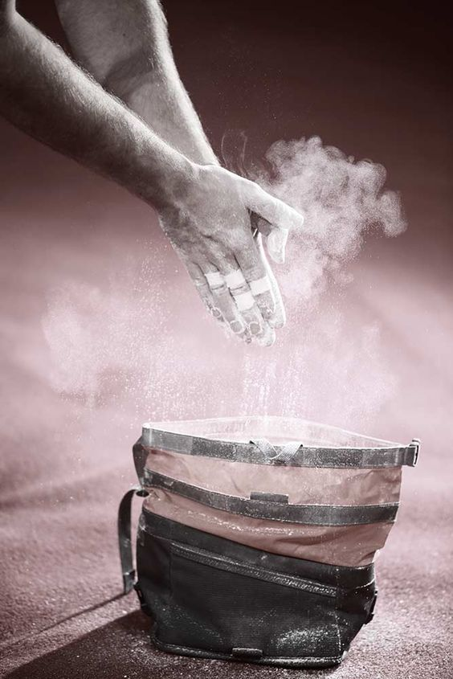
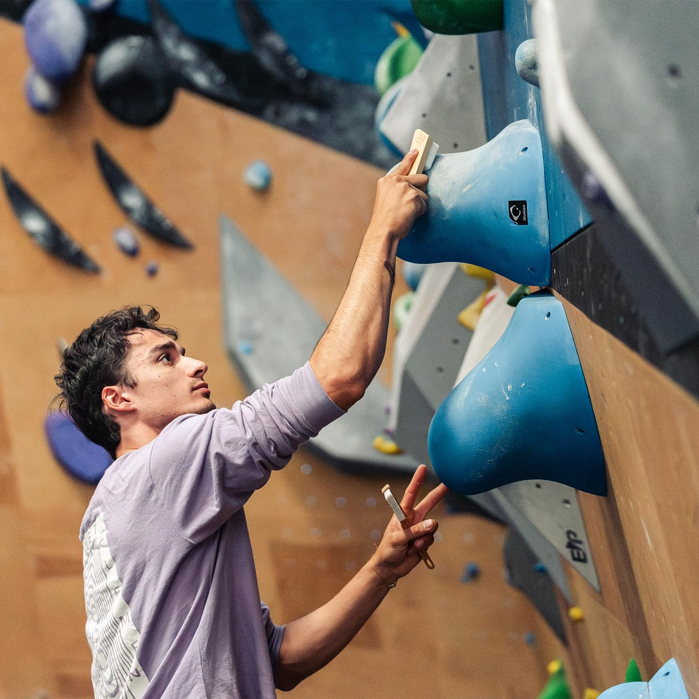

Chaussons
Ils assurent l’adhérence et la précision sur les petites prises. Pour débuter, choisissez une paire confortable et ajustée, sans douleur.
En salle, le matériel essentiel tient dans un petit sac. Commencez simplement, puis affinez selon vos sensations et le type de grimpe que vous aimez.
Ils assurent l’adhérence et la précision sur les petites prises. Pour débuter, choisissez une paire confortable et ajustée, sans douleur.

Elle absorbe l’humidité des mains et améliore le contact avec les prises. Utilisez-la avec parcimonie et nettoyez les traces.

Porté à la taille ou posé près du mur, il garde votre magnésie accessible pendant les essais.

Une brosse enlève la magnésie sur les prises et préserve leur adhérence pour tous les grimpeurs.